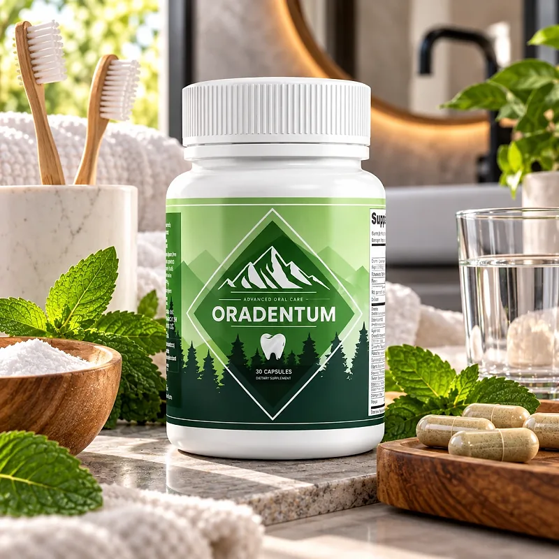
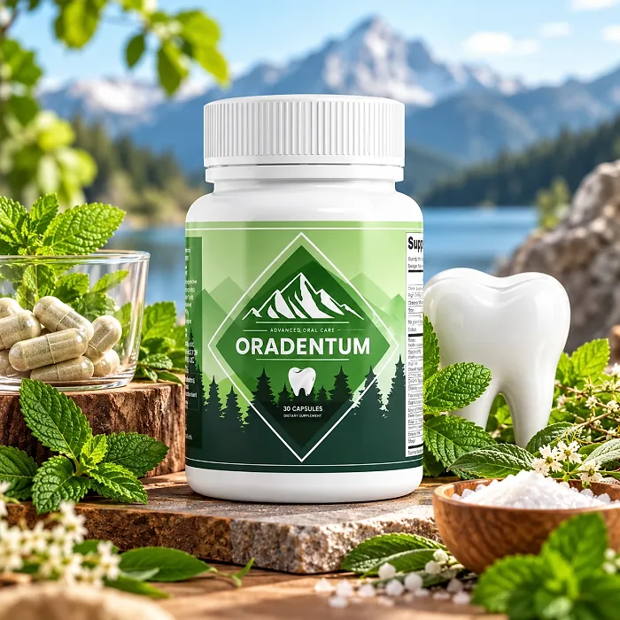
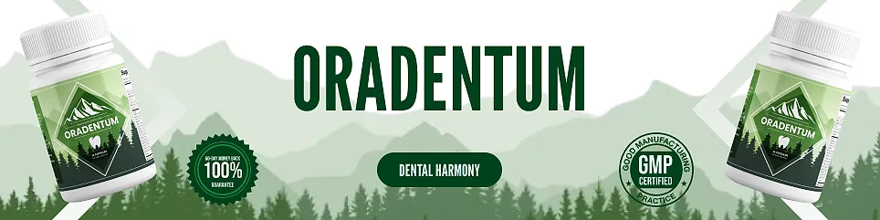

What Is Oradentum And How Does It Work?
Oradentum is a dietary supplement in capsules labeled "Himalayan Dental Mix" and "Oral Health Supplement." It is marketed to adults who want to support healthy gums, strong teeth, and fresh breath with one capsule a day, as a complement to brushing and flossing.
The official website describes it as a 21-in-1 formula of nutrients, herbs, and minerals. The label lists 20 ingredients with their doses: vitamins and minerals such as Vitamin C, Vitamin E, Zinc, Magnesium, Manganese, Biotin, and Chromium, and botanicals such as Banaba, Guggul, Bitter Melon, Licorice, Cinnamon, Gymnema, Yarrow, Cayenne, Juniper, and White Mulberry, plus Alpha Lipoic Acid, Taurine, and Vanadium.
According to the official website, vitamins C and E help support gum health and protect oral tissues from oxidative stress, zinc and biotin nourish teeth and gums, magnesium and manganese support the natural remineralization of teeth, and licorice and cinnamon promote fresh breath.
There is an important detail, though: this exact list of ingredients and doses is the same one found on several blood sugar formulas from the same distributor. Only part of it, such as vitamin C, zinc, and licorice, has a clear link to oral health.
With consistent daily use, the customers quoted on the official website describe healthier-feeling gums and more confidence in their smile, always alongside brushing, flossing, and dental check-ups.
In practical terms, Oradentum is a bottle of 30 capsules, a one-month supply.
According to the official website, the ingredients are handled following the USDA National Organic Program in an FDA-registered and inspected facility, and the label names PhytoThrive Labs as the distributor. It is a supplement, not a replacement for dental care.
Oradentum Ingredients
The Supplement Facts panel of Oradentum lists every ingredient with its amount per capsule, with no proprietary blend. These are the ones the official website links to oral health:
Vitamin C (50 mg) and Vitamin E (10 mg): Antioxidants that help support healthy gums and oral tissues.
Zinc (7.5 mg) and Biotin (300 mcg): Nutrients that support a clean, healthy mouth environment.
Magnesium (125 mg) and Manganese (1 mg): Minerals involved in teeth and bone structure.
Licorice Root (50 mg) and Cinnamon Bark (50 mg): Botanicals traditionally used for fresh breath and oral cleanliness.
Alpha Lipoic Acid (30 mg) and Taurine (25 mg): Antioxidant compounds that support a balanced mouth environment.
Banaba (25 mg, 1% corosolic acid): A leaf extract with antioxidant properties.
The label also lists Chromium 0.67 mg (1914% of the Daily Value), Guggul 50 mg, Bitter Melon 50 mg, Gymnema 50 mg, Yarrow 25 mg, Cayenne 10 mg, Juniper Berries 25 mg, White Mulberry 25 mg, and Vanadium 0.2 mg, ingredients usually chosen for blood sugar support rather than for teeth. The other ingredients are natural gelatin, microcrystalline cellulose, magnesium stearate, rice flour, and silica.
One more detail: the official website calls the formula vegan, but the label lists a gelatin capsule.
Oradentum Side Effects
Oradentum is generally considered well tolerated by healthy adults, and the official website describes it as pure, free of dangerous stimulants and toxins, non-GMO, and gluten-free. Its label also lists the doses of every ingredient, which makes it easy to review with a doctor or dentist.
Because the label is the same as that of a blood sugar formula, a few cautions apply that many buyers of a dental product would not expect.
Anyone who takes medication for blood sugar should talk to their doctor first, because bitter melon, gymnema, banaba, chromium, and alpha lipoic acid may add to its effect. Licorice root may raise blood pressure in some people, guggul may interact with thyroid and blood-thinning medication, and the chromium dose is well above the Daily Value. The capsule is made of gelatin. Gum bleeding, tooth pain, or loose teeth need a dentist, not a supplement. It is not intended to diagnose, treat, cure, or prevent any disease, and individual results may vary.
According to the label, it is not for use by those under 18 or by pregnant or nursing mothers, and anyone taking medication or with a medical condition should consult a physician before using Oradentum.
Oradentum Dosage
The recommended Oradentum dosage is one capsule a day. There are no powders, rinses, or drops to prepare.
The directions printed on the label are simple: adults take one capsule daily with food. Taking it with the same meal every day makes the habit easy to keep and helps the botanicals sit well with the stomach. Swallow the capsule with a full glass of water; it is not meant to be chewed or opened in the mouth, since it works as a daily nutritional supplement rather than a rinse or a topical product. Keeping the bottle next to your toothbrush is an easy reminder to take it every day.
Each bottle holds 30 capsules, a one-month supply. The official website suggests giving the formula a fair chance over several weeks, which is why it offers three- and six-bottle packages.
The label advises storing the bottle in a cool, dry place below 30°C (86°F), keeping it out of the reach of children, and not using it if the safety seal is damaged or missing.
A supplement only complements oral hygiene: brushing twice a day with fluoride toothpaste, flossing, limiting sugary drinks, and visiting the dentist regularly are what keep teeth and gums healthy.
Oradentum – Refund Policy
Oradentum comes with a 60-day money-back guarantee counted from the day you receive the order.
According to the refund policy on the official website, all items can be returned within 60 days after they are received, and the policy says it accepts returns of all unopened items for a full refund minus any shipping fees. All the bottles you received must be sent back, and the return shipping is paid by the customer.
How to request a refund: Email product support, then send all the items to the warehouse at 19655 E 35th Dr #100, Aurora, CO 80011, USA. The FAQ on the order page gives a different return address, 37 Inverness Drive East, Suite 100, CO 80112, so it is worth confirming the correct address with support before shipping.
Customer Support Contact Information: the product support email listed on the contact page of the official website; order questions go to BuyGoods, the retailer, at +1 (302) 200-3480.
Refund Processing Time: The policy says the refund is processed within a few days after the package is received, and how long it takes to show on your statement depends on your bank or card company.
The "unopened items" condition and the two different addresses are details worth clarifying before ordering.
Oradentum Customer Reviews
-
Corinne F.Verified Purchase – 6 Bottles
“This is absolutely like nothing I’ve ever tried! The results were more than surprising - my gums have never felt healthier! And it’s so easy to use.”
-
James V.Verified Purchase – 6 Bottles
“I always felt embarrassed about my teeth and breath. Not anymore! Just get it - you’ll finally feel confident with your smile.”
-
Rachel S.Verified Purchase – 6 Bottles
“I wasn’t sure if I really needed this at first, but let me tell you - after using it, I can’t imagine my routine without it!”
Oradentum – Where To Buy
Oradentum is sold through its official website, so if you decide to try it, it's important to be careful about where you purchase it. The official website is the only sales channel the manufacturer lists, and it does not point to marketplaces such as Amazon, eBay, or Walmart.
Listings on third-party platforms may look similar but cannot be verified as authentic, raising concerns about safety, quality, and ingredient freshness. Products purchased outside the official source may not be covered by the 60-day guarantee.
For this reason, most customers recommend purchasing Oradentum only through the official website. Buying directly from the official source ensures you receive the authentic original product, with access to customer support and the full guarantee. According to the official website, every purchase is a one-time order, with no automatic renewals, hidden fees, or surprise charges.
To avoid counterfeit batches and ensure maximum quality, always verify that you are ordering from the official Oradentum website before completing your purchase.
To ensure you’re getting the authentic product, most users choose to visit the official website.
Is Oradentum A Scam?
Going by what the official website and the product label show, Oradentum appears to be a real product, with a complete Supplement Facts panel, a distributor named on the label, a warehouse address, and a written refund policy.
The biggest issue is what the label actually contains. The formula, dose by dose, is the same one sold by the same distributor as a blood sugar supplement, with banaba, bitter melon, gymnema, guggul, chromium, and vanadium. Some of its nutrients, such as vitamin C, zinc, and licorice, are relevant to oral health, but most of the formula was not designed for teeth and gums.
There are other inconsistencies. The website calls it vegan, but the capsule is gelatin. It promises "incredible results in record time". The return address in the FAQ differs from the one in the refund policy, and the policy limits full refunds to unopened items. The footer also names ClickBank, while orders are processed by BuyGoods.
Customers quoted on the official website describe healthier-feeling gums and more confidence in their smile. Expectations should stay realistic: no supplement replaces brushing, flossing, and dental care.
Oradentum is backed by a 60-day money-back guarantee, and the official website says every order is a one-time payment.
For adults who want a daily capsule with antioxidants and minerals as part of their oral care routine, Oradentum may be worth considering, as long as they know what is on the label and check it with a doctor if they take medication.
For those who want to verify product details or check current availability, the official Oradentum website remains the safest option.

Check Availability On Official Website
